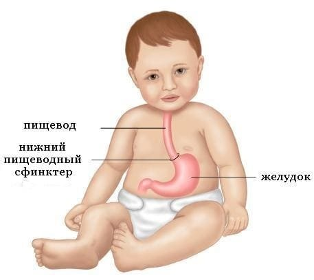
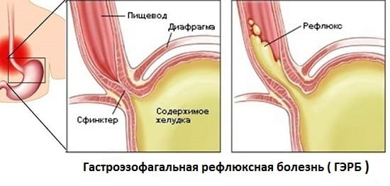
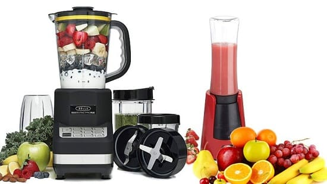

(ИЗЖОГА, ДИСПЕПСИЯ)
Если вам кажется, что у вашего ребенка колики, он много срыгивает и беспокойно спит, — у него может быть рефлюкс. Давайте проследим процесс перемещения пищи изо рта в живот, чтобы понять, что происходит при рефлюксе. После того как еду прожевали и проглотили, она отправляется в путешествие вниз по пищеводу в желудок. После того как пища попала в желудок, кольцеобразная мышца, расположенная в месте перехода пищевода в желудок (так называемый нижний пищеводный сфинктер — НПС), сокращается, действуя как клапан, который не дает пище и кислому содержимому желудка забрасываться («рефлюкс» переводится как «обратный заброс») обратно в пищевод. Иногда этот клапан не сформирован и не закрывается полностью. Когда желудок сжимается, частично переваренная пища и желудочная кислота вытекают обратно в пищевод и раздражают (или «обжигают» — отсюда термин «изжога») его чувствительную внутреннюю оболочку. Выраженность боли, испытываемой ребенком, зависит от степени рефлюкса. Когда содержимое желудка поднимается обратно по пищеводу лишь немного, ребенку может стать больно, но он не отрыгнет. Но если рефлюкс такой сильный, что содержимое желудка поднимается на всю длину пищевода, ребенок может отрыгнуть большое количество пищи, особенно если он лежит. Вытекшее содержимое желудка может остаться на задней стенке глотки, вызывая воспаление носоглотки, отрыжку, кашель, разрушение зубной эмали и неприятное или «кислое» дыхание. При выраженном рефлюксе содержимое желудка может проникнуть в легкие во время вдоха, вызывая свистящее дыхание или симптомы, похожие на астму.
Гастроэзофагальный рефлюксная болезнь и «счастливые срыгиватели». Около 30% младенцев немного срыгивают, но то не доставляет им неудобств. Мы окрестили этих детей «счастливыми срыгивателями». Они не испытывают боли и нормально растут, так что их срыгивания — в большей степени проблема прачечной, чем медицины. Но если эта нормальная стадия срыгивания у ребенка не проходит — а она должна пройти самое позднее к 3 месяцам, а срыгивания болезненны и мешают кормлению, сну, росту и развитию, врач может поставить вашему ребенку диагноз гастроэзофагальной рефлюксной болезни.
ПРИЗНАКИ И СИМПТОМЫ У ГРУДНЫХ ДЕТЕЙ

СОВЕТ ДОКТОРОВ СИРС: В ПЕРВУЮ ОЧЕРЕДЬ ДУМАЙТЕ О ГАСТРОЭЗОФАГАЛЬНОЙ РЕФЛЮКСНОЙ БОЛЕЗНИ, А НЕ О КОЛИКАХ В нашей педиатрической практике мы не используем универсальный термин «колики». Вместо этого мы говорим «страдающий ребенок» — более точный термин, который побуждает и родителей, и врача продолжать поиски причин и лечения. Просто повесить на ребенка ярлык «колики» часто означает не поставить верный диагноз. |
СИМПТОМЫ У ДЕТЕЙ СТАРШЕ ГОДА
• «Кислое дыхание».
• Осиплый голос из-за раздражения голосовых связок кислотой.
• Частые инфекции ушей и носов пазух.
• Разрушение зубной эмали у малышей.
• Возможен недостаточный набора веса.
• Чрезмерное слюнотечение. Слюна, которая обволакивает раздраженный пищевод, может выступать в роли нейтрализатора кислоты и защитного смазочного материала.
• Изгибания и привычный наклон шеи набок, как будто у ребенка спазмы мышц спины или шеи.
ЧТО ДЕЛАТЬ
Мать одного младенца, у которого в конечном счете был диагностирован выраженный рефлюкс, сказала нам «я буду ночевать в вашем офисе, пока вы не выясните причину, по которой мой ребенок так сильно плачет». Ниже приведена пошаговая инструкция, как поставить диагноз и помочь вашему ребенку почувствовать себя лучше.
Поставьте правильный диагноз. Главная цель — определить, есть ли у вашего ребенка ГЭРБ, и, если есть, установить ее степень. Ваша помощь понадобится врачу не только для того, чтобы поставить диагноз ГЭРБ, но, и чтобы решить, можно ли вылечить ее простым изменением режима питания и положения тела младенца вовремя и после кормления, или случай настолько серьезный, что требует применения антацидов. Вы можете помочь своему врачу, если будете вести дневник ГЭРБ. Записывайте туда:
• признаки и симптомы, которые вы замечаете (смотрите приведенный выше список);
• насколько, по вашему мнению, они выражены;
• наблюдается ли ухудшения или улучшение симптомов;
Обследование, которое врач может назначить. Если признаки явно указывают на ГЭРБ, вы совместно со своим врачом можете составить план лечения. Если диагноз неясен или ваш врач подозревает, что в пищеварительном тракте есть еще какая-то проблема, могут потребоваться дополнительные исследования, такие как:
• рентгенограмма или компьютерная томография верхних отделов желудочно-кишечного тракта. Это делается в основном для того, чтобы убедиться, что у ребенка нет таких аномалий, как пилоростеноз — частичная блокировка того места, где желудок соединяется с тонким кишечником, или других пороков развития кишечника. Простой рентгенограммы верхних отделов желудочно-кишечного тракта не всегда достаточно для определения степени рефлюкса;

СОВЕТ ДОКТОРОВ СИРС: ПРИНИМАЙТЕ АКТИВНОЕ УЧАСТИЕ В ОБСЛЕДОВАНИИ Чтобы помочь определить уровень и тяжесть рефлюкса, постарайтесь уточнить, в какое время у вашего ребенка наблюдаются самые сильные симптомы, например, «пик крика». Расшифровщик результатов рН-метрии затем соотнесет показания кислотности с временем наблюдаемых симптомов. |
• pH-метрия. Этот анализ может быть проведен как амбулаторно, так и в стационаре и иногда даже дома. Через нос ребенка в пищевод вводятся одна или две тонкие, как спагетти, трубочки. Другой конец трубочки соединяется с устройством, расположенным рядом с младенцем или надевающимся как рюкзак на детей старшего возраста. Устройство снимает показания рН, или уровень кислотности жидкости, которая была заброшена обратно в пищевод;
• эндоскопия. В кабинете у врача, в процедурном кабинете для амбулаторных больных или в больнице детский гастроэнтеролог даст вашему ребенку седативное средство и введет гибкую трубку через его нос. Эндоскоп соединен с камерой, которая позволяет врачу видеть, есть ли эрозии слизистой оболочки пищевода и желудка и насколько они серьезны. И хотя этот метод является инвазивным, он считается «золотым стандартом» для оценки степени рефлюкса. Если слизистая только немного раздражена, можно будет применить менее агрессивное лечение. Однако при обнаружении сильной эрозии слизистой пищевода потребуется тщательная и агрессивная терапия, чтобы предотвратить дальнейшее разрушение слизистой и возможное сужение пищевода;
• тест опорожнения желудка. Этот метод также называется сцинтиграфия. Ребенку скармливают бутылочку грудного молока или детской смеси, содержащей очень: слабое радиоактивное вещество. Компьютер сканирует брюшную полость ребенка и устанавливает, как скоро опустошается желудок. Этот тест также может показать, попадает ли желудочное содержимое в легкие.
СОВЕТ ДОКТОРОВ СИРС: ДЛИТЕЛЬНОЕ ПРЕБЫВАНИЕ РЕБЕНКА В ПОЛОЖЕНИИ СИДЯ МОЖЕТ УСУГУБИТЬ РЕФЛЮКС У некоторых детей приступы рефлюкса могут усиливаться, когда они подолгу сидят, например, на детском стульчике или в автомобильном кресле, даже если они сидят прямо. Поддерживание ребенка в более вертикальном положении снижает давление на желудок и может уменьшить рефлюкс. |
ЛЕЧЕНИЕ
Вот три составляющих лечения ГЭРБ:
• изменения кормления;
• методика изменения положения ребенка во время кормления;
• применение препаратов, снижающих уровень кислотности.
Практикуйте правила «естественных родителей». Четыре правила естественного родительства, которые лучше всего помогают победить рефлюкс: кормление грудью, слингоношение, совместный сон и убежденность, что плач ребенка является ценным сигналом. У естественного родительства три способа помочь ребенку справиться с гастроэзофагальной рефлюксной болезнью:
• дети естественных родителей меньше плачут:
• у них лучше пищеварение;
• естественная мама по поведению ребенка понимает, когда он собирается заплакать или у него приближается приступ рефлюкса, и предотвращает это. используя методику изменения положений.
Избегайте советующих дать ребенку накричаться. Запомните: дети, страдающие от ГЭРБ, плачут потому, что им больно, а не потому, что они пытаются «манипулировать» вами. При плаче увеличивается давление внутри брюшной полости и усиливается рефлюкс. Кроме того, при плаче ребенок заглатывает больше воздуха, который попадает в том числе и в желудок, что также усугубляет рефлюкс. В своей практике мы встречали детей, у которых слизистая пищевода сильно пострадала из-за рефлюкса, так как их родителям советовали «дать ребенку выкричаться». Плач вашего ребенка — это его способ общения.
СОВЕТ ДОКТОРОВ СИРС: ПРАВИЛО «ДВОЕК» ПРИ РЕФЛЮКСЕ • Кормите ребенка в два раза чаще. • Кормите ребенка порциями в два раза меньше. • Поощряйте ребенка играть в «жуй-жуй» (жевать в два раза дольше). Правило «двоек» особенно важно при кормлении смесями и после введения в рацион твердой пищи. По нашему опыту, более частое употребление меньшего количества пищи и замедление кормления эффективно облегчают рефлюкс. |
Единственный человек, который лучше всего знает, когда и как реагировать на плач младенца, — та, у кого с ребенком была общая пуповина, — мама. Запомните, вы не виноваты в том, что ваш ребенок плачет, и это не означает, что вы — плохая мать. Реагируйте так чутко, как можете. Это все, что, нужно вашему ребенку.
Часто кормите ребенка. Частое кормление стимулирует выработку слюны. Слюна смазывает раздраженную слизистую пищевода и нейтрализует желудочную кислоту. Кроме того, она содержит вещество, называемое фактором роста эпидермиса, которое способствует заживлению поврежденной слизистой. И чем меньше еды находится в желудке, тем меньше рефлюкс и тем быстрее желудок опорожняется; наилучшее решение частое питание маленькими порциями.
Кормите ребенка молоком, благоприятно влияющим на животик. Кормите грудью чаще и дольше. Кормление грудью помогает мамам и малышам потому, что:
• грудное молоко выводится из желудка в два раза быстрее, чем детская смесь;
• грудное молоко — естественный нейтрализатор кислотности, а дети, вскармливаемые грудью, едят чаще;
• во время кормления грудью у мам вырабатываются успокаивающие гормоны, которые помогают им сладить с плачущими и болеющими детьми;
• материнское молоко также сод жит ферменты, способствую пищеварению.
СОВЕТ ДОКТОРОВ СИРС: НИКОГДА НЕ ФИКСИРУЙТЕ БУТЫЛОЧКУ Поскольку у детей с рефлюксом содержимое желудка может выталкиваться обратно, оно может попасть в рот, а оттуда — в дыхательные пути, что может привести к аспирации и нарушению проходимости дыхательных путей. Поэтому никогда не закрепляйте бутылочку над кроваткой и не оставляйте ребенка без присмотра время кормления. |
Считайте грудное молоко и кормление грудью лучшим мамин средством от рефлюкса. Груд вскармливание помогает младенцам практически при любом кишечном расстройстве, но обратите внимание на свое питание - дети, страдающим рефлюксом, склонны реагировать аллергены, попадающие в молоко маминой пищи. Обычные обидчики — коровье молоко, пшеница, орехи, соя и кукуруза.
Используйте гипоаллергенные смеси. Желудочно-кишечный тракт детей, страдающих рефлюксом, подвержен двойному удару: аллергия на смеси повреждение содержимым желудка. Поэтому, если вы кормите ребенка смесями, ваш врач может порекомендовать вам гипоаллергенную смесь. Помимо того, что они лучше переносятся чувствительным желудочно-кишечным трактом, некоторые из смесей быстрее перевариваются.
Давайте ребенку покой после кормления. Это не время для обычной папиной игры с подкидыванием ребенка или тисканьем его на коленях. Толки и тряска могут привести к том что содержимое желудка будет забрасываться в пищевод.
Держите ребенка вертикально после кормления. Держите ребенка вертикально и не качайте в течение 30 минут после кормления. Носите ребенка в слинге большую часть дня, чтобы он оставался в прямом положении с углом наклона минимум 30 градусов.
Дайте ребенку как следует срыгнуть. Воздух, попавший в желудок, усугубляет рефлюкс. Чтобы уменьшить падание воздуха, позвольте ребенку срыгнуть, перед тем как дать ему вторую грудь. Если вы кормите его из пилочки, используйте антиреф- люксную соску, чтобы уменьшить заглатывание воздуха, и давайте ребенку срыгивать после каждых 80—110 граммов.
Поудобнее устройте ребенка спать. Дети, страдающие рефлюксом, часто осыпаются от боли ночью, так как риск горизонтальном положении сила тяжести не помогает им удерживать съеденное внизу. Если ребенок спит спокойно, поднимите изголовье охватки примерно на 30 градусов, используя подпорки или книги. Хотя безусловно, спать на спине — самое безопасное положение, младенцам с рефлюксом часто предпочтительной спать на левом боку. В этом положении вход в желудок расположен выше, чем выход, поэтому сила тяжести не даст содержимому желудка подниматься. В детских магазинах можно купить специальные рефлюксные клинья, которые фиксируют ребенка в вертикальном положении во время сна. Для детей с рефлюксом сконструирована даже специальная кровать, похожая на гамак. Она называется Amby Motion Bed (кровать-кокон). Легкое раскачивание и вертикальное положение часто помогают детям с рефлюксом лучше спать.
СОВЕТ ДОКТОРОВ СИРС: ОБРАТИТЕСЬ К МАНУАЛЬНОМУ ТЕРАПЕВТУ Мануальная терапия помогает не только при болях в спине. Нежные массирующие движения на определенных участках спины ребенка могут повлиять на контроль нервной системы над пищеварительной системой. Хотя в популярной медицинской литературе не встречается научных доказательств того, что мануальная терапия помогает при рефлюксе, в большинстве случаев мы наблюдали хорошие результаты у наших пациентов. Мы думаем, что стоит попробовать. |
Успокойте младенца. Хотя обычно мы не рекомендуем часто и длительно использовать пустышки, они могут помочь ребенку, страдающему от рефлюкса. Частое сосание стимулирует выработку слюны, которая нейтрализует кислоту и успокаивает раздраженную слизистую пищевода.
Одевайте ребенка в просторную одежду. Тесные подгузники и пояса могут увеличить давление внутри брюшной полости и усилить рефлюкс.
Кроме того, у младенцев часто происходит рефлюкс во время смены подгузника, когда они лежат на спине. Чтобы избежать этого, используйте антирефлюксные клинья при этой процедуре.
Не курите! Вдыхание никотина из табачного дыма увеличивает выработку желудочной кислоты и открывает нижний сфинктер пищевода — оба этих фактора усугубляют рефлюкс. Табачный дым вреден не только для младенца, но и для матери. Он может понизить у нее уровень гормона пролактина, который помогает расслабиться и справиться со своим страдающим ребенком. Повесьте в доме знак «не курить» и максимально избегайте пассивного курения.
Отложите введение твердой пищи. Если ваш младенец прекрасно себя чувствует, питаясь только грудным молоком или смесью, не стоит увешивать проблемы с животиком, слишком рано вводя твердую пищу! Хотя состояние некоторых детей с рефлюксом улучшается при употреблении более густой и твердой пищи, большое ее количество, находящееся в желудке слишком долго, может усушить рефлюкс. Отложите введение твердой пищи на несколько месяцев, если только ребенок не требует ее! Вводите прикорм, начиная с маленьких, но частых порций, и хорошо его измельчайте. Если ваш ребенок страдает рефлюксом, блендеры и кухонные комбайны будут вашими лучшими друзьями на кухне.

ПИЩА, УСУГУБЛЯЮЩАЯ РЕФЛЮКС Быстро переваривающаяся еда — смузи, супы и продукты с пониженным содержанием жира — обычно проходит через желудок быстрее. Нижеперечисленная еда может задерживаться в желудке ребенка дольше и усиливать ГЭРБ. Эти продукты также могут повлиять на грудное молоко и раздражать животик младенца: • жареные продукты; • жирные продукты; • продукты с повышенной кислотностью: помидоры, сладкий перец, цитрусовые, лук; • мясо с хрящиками; • кофеин (увеличивает выработку желудочной кислоты); • слишком большое количество шоколада; • газированные напитки; • cлишком большое количество специй (избыток перца чили). |
Советы при рефлюксе у детей старше года:
КОГДА НУЖНЫ ЛЕКАРСТВА
Легкий рефлюкс может быть излечен описанными выше методами изменения положения и кормления. Но у некоторых младенцев и малышей рефлюкс настолько тяжел, что необходимо подавлять выработку кислоты в желудке, чтобы избежать длительного повреждения пищевода. Прежде чем мы поговорим о лекарствах, вот несколько вещей, о которых должны думать родители.
Фруктовые соки с высоким содержанием фруктозы (сливовый, яблочный и грушевый) вызывают повышенное газообразование в желудочно-кишечном тракте и усугубляют рефлюкс, если ваш ребенок ест слишком много или слишком быстро. Если он любит эти соки, то пусть пьет их медленно и помалу, но часто.
Следуйте алгоритму «таблетка-навык». ГЭРБ - одна из болезней, лечении которых роль навыков трудно переоценить. Большинство больных рефлюксом можно вылечить навыками самоусовершенствования с
минимальным использованием таблеток. Помните, таблетки — дополнение, а не замена навыков.
У таблеток есть побочные эффекты. Ваш доктор хорошо подумает, прежде чем назначить антацид вашему младенцу или малышу постарше. Главная причина в том, что кислоты необходимы для переваривания и здоровья кишечника. Помимо помощи в переваривании, кислоты помогают сохранить правильный баланс бактерий в нижних отделах кишечника уничтожают вредные бактерии, которые могут присутствовать в небольшом количестве в еде. Подавление кислотности желудка может усилить рост вредных бактерий, так что их станет больше, чем здоровых, и увеличить риск развития кишечных расстройств, таких как воспаление и диареи.
СОВЕТ ДОКТОРОВ СИРС: ИСПОЛЬЗУЙТЕ ПРОБИОТИКИ Детям, получающим антациды, мы обычно назначаем пробиотики. Пробиотики — это полезные бактерии, находящиеся в обработанных, специально приготовленных молочных продуктах, таких как йогурт. Пробиотики содействуют восстановлению здорового баланса полезных и вредных бактерий в кишечнике, который нарушается при лечении антацидами. |
Препараты, понижающие кислотность, — антациды. Они применяются для лечения рефлюкса средней степени тяжести. Главные компоненты — кальций, алюминий или магий, которые нейтрализуют кислоту. Даются 3—4 раза в день, непосредственно перед кормлением.
Препараты, улучшающие перистальтику. Эти препараты, также называемые прокинетиками, усиливают сжатие нижнего сфинктера пищевода и способствуют прохождению пищи вниз по желудочно-кишечному тракту, ускоряя опорожнение желудка. К сожалению, не все они безопасны для детей, в связи с чем эта часть терапии постоянно изменяется.
Блокаторы Н2-рецепторов и ингибиторы протонной помпы. Эти два вида лекарств подавляют выработку желудочной кислоты в зависимости от вида и дозы лекарства, которое назначается с учетом возраста ребенка и выраженности рефлюкса. Вот почему так важно вести дневник, детально описывающий тяжесть рефлюкса.
ХИРУРГИЧЕСКОЕ ЛЕЧЕНИЕ
Если, несмотря на старания врачей и родителей, рефлюкс нарушав рост и развитие ребенка, иногда требуется хирургическое вмешательство. Самая распространенная операция; называется фундопластика. Во время этой процедуры часть мышц верхнего отдела желудка перемещают так, что они полностью или частично охватывают нижний отдел пищевода, сжимая эту область и уменьшая рефлюкс. Сейчас эту операцию чаще делают при помощи лапароскопа (и нескольких крохотных разрезов), чем через большой разрез в брюшной; стенке. При частичном охвате пищевода у ребенка сохраняется возможность рвоты, поэтому такой вариант зачастую предпочтительней. К хирургическому лечению рефлюкса часто прибегают у детей с нарушениями психики, потому что они склонны к более тяжелому течению ГЭРБ.
Здоровье ребенка от докторов Сирс / Сирс У. и др.